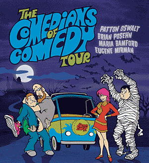
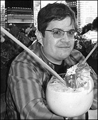
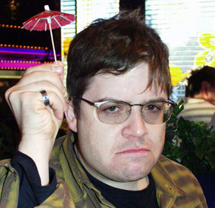
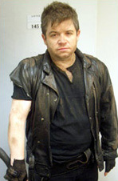
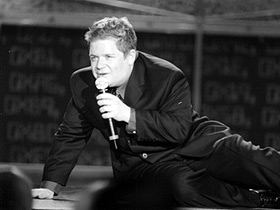
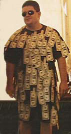
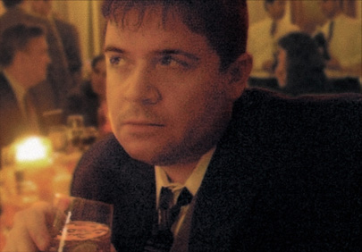

|
Patton Oswalt is known to a portion of America as the Spence Olchin character from The King of Queens on CBS. The other portion is familiar with his writing and performance contributions to Mr. Show, Aqua Teen Hunger Force, NewsRadio, Zoolander, Home Movies, Shorties Watchin' Shorties, Crank Yankers, Reno 911! and Tom Goes to the Mayor. These days, people are growing increasingly aware of his presence in the documentary and serialized televison program The Comedians of Comedy. The program showcases a tightly-knit group of comedians (Oswalt, Brian Posehn, Maria Bamford, Zach Galifianakis, Eugene Mirman, and most recently Aziz Ansari) as they criss-cross the country in an RV, performing in nightclubs and indie rock venues. He fills his idea notebooks with the compositions of a master scrapbooker at the top of his form. His attention to detail -- combined with a steadfast refusal to release anything "until it's good" -- regularly generates direct comparison with today's top cartoonists. In 2003, Oswalt completed an issue of Justice League of America for DC Comics, entitled JLA: Workweek. Of this effort, Patton has already confessed that the main character was inspired by author Jim Goad, the Portland-based publisher of Answer Me! and the creator of The Redneck Manifesto. But no matter how many awards they accumulate, now matter how many fans they've got, cartoonists like Dan Clowes and Chris Ware engage in life-long battles to silence their inner critics and get good work done. Mr. Oswalt's standup is the product of a similarly laborious effort. At the very bottom of this interview, check out a few photographs from his private notebook. ROTTEN: At this stage in your career, what does your critic sound like -- and how do you handle it? PATTON OSWALT: My inner critic is getting louder. Except I'm listening to him. I'm 37 years old now, with a ratio of about 2 to 1 of things I've done that I'm satisfied and excited about. My inner critic is telling me to change that ratio, and I'm trying to do it. I'm a huge fan of Ware, Burns, Clowes and Sacco, and that's the direction I want to take my career in these next few years -- and all the years beyond. Only things I'm truly interested and passionate about. We'll see. The illustration on your website looks like a Jim Woodring. Is that how he sees you? I swiped that off the spine of an old edition of Arthur Machen's works. I do have a portrait that Dan Clowes did of me. I oughta put that up. [Arthur Machen (1863-1947) was an essayist, journalist, translator, Shakespearean actor and occultist, considered by H.P. Lovecraft to be one of the four modern masters of supernatural horror writing.] What are the effects on your mental or physical health of being a comedian? I think your mental health improves immeasurably, as long as you're focused on your own progress, and you don't compare where you are in your career to your peers. The people who crack up are the ones who stop being excited and interested in what they're doing. Physical health gets shot to hell. Travel and club food equals early doom. Do you feel compelled to get enough sleep, or exercise, or eat right? This year the karma really came calling, health-wise. Luckily, I also realized how little food and alcohol I need to be happy -- which is a lot less than I've been used to. But the only way to stay sharp is to write every day. At least, for a comedian. Have you found developing comedy to be sufficient enough therapy -- or do you have any experience with counseling or anti-depressants? I wish comedy were enough. Shrinks and pills have done me good. Fuck you, Scientologists. Sex, Drugs, ViolenceAt what point in your career did it become necessary to procure an agent? You never "procure" an agent or manager. They come after you when the time is right. You just work really hard on making your work something you're proud of, and chances are the right person will find you. If you pursue representation, you'll get shitty representation. Is there such a thing as an appropriate ratio between writing comedy and smoking pot?I don't smoke pot anymore, so I couldn't say. But a shot of Balvenie for every hour writing works pretty good for me. Booze-wise, I like red wine and single malt scotch, and that's it. Friday, Saturday, and Sunday afternoon. And at no other time. I'm obligated to ask about the scope of your experience with the ladies of Amsterdam. The red light district in Amsterdam was fun to walk through, but the hookers always made me sad. I saw one guy -- this is when I visited the half-block red light district in Utrecht -- tapping the glass in front of this one hooker, and she was reading a paperback. So she looks up and sees him, and then gives him a, "One second" gesture, and then finished her paragraph and then marks the place in the book. Then the guy went in and fucked her. How that was a turn-on I'll never understand. A madame in Atlanta sent a hooker to my room -- I think this was back in 2002. She'd seen my show the night before, and she and I talked at the bar afterward. So I guess she thought she was giving me a surprise. Now that I think of it, that was pretty fucking kind-hearted. So this chick shows up -- really cute -- but I made the mistake of talking to her. And her life was so miserable and dark that I couldn't imagine fucking her, so we went down to the hotel restaurant, and ate burgers and watched a football game. I still don't know if she considered that an insult or not. I wished her luck with her sculpture, though. Have you gotten away with any good crimes? Vandalism? Pranks? I've never been arrested. I've gotten away with sneaking pot on airplanes. I talked my way out of a DUI. I did some shoplifting when I was in high school. I'm a crime pussy. What do you have on your TiVo? Not the fourth season of The Wire, goddamit. Lost, House, The Shield, 24, Smallville, Battlestar Galactica, Frontline and Deadwood. But not the fourth season of The Wire. Get off your asses, HBO!
Boner-inducing. Is there anything missing from your life, or are you pretty much exactly where you'd like to be? There's stuff missing, but that's my business. Making It FunnyThe level of craft in your enthusiastic wordsmithing is the standard by which today's rap songs could be measured. Shut up, you pretentious douchebag! Also, thank you. Do you think you might be one of the few individuals out there who doesn't regret being an English major? What makes me happiest about being an English major is I read five times as much as when I was an English major. Nothing dims your enthusiasm for the books than being tested, graded and evaluated on what you retained. Once I graduated, I started reading like I was Ann Coulter and the pages were dipped in cocaine. In "On Writing," Stephen King laments that fans never question him about the language. Are there questions about comedy which people aren't asking? Are aspiring comics just searching for a magic bullet? Sometimes. The good ones aren't. The good ones realize, instinctually, that it's about the work, and the writing, and being real and in the moment onstage. I do wish people were able to evaluate comedy beyond simply the crowd reaction, beyond the people going, "Woooooooo!" and be able to tell when the hooting and hollering is coming from someone pandering, and saying something everyone already agrees with, as opposed to a comedian getting that reaction from saying something startling, and original, and unexpected. But that's a wish, and wishes are a waste of fucking time. Goals. Have goals and not wishes. And goals are only for yourself, not the rest of the world. The rest of the world isn't your business. In your alone time, what's the latest thing you find yourself doing? The thing I'm doing in my "alone time" is to destroy all my normal habits. I've got six hours of material that's the result of 16 years of pursuing comedy one specific way. I'm going to try a different process and see what comes of it. I've also tried to make a conscious effort to talk half as much as I normally do, and actually listen to everyone, even boring people. I'm very self-centered and vain, which serves you as a comedian, up to a point. I'm trying to go the other way. I'm kind of an asshole, so it's hard. You were the dead scuba diver in Magnolia. Do you like the idea of taking on straight or even dramatic roles, where creating humor isn't necessarily a priority? Yeah. Anytime I get a chance to do something which isn't within my strengths, or something for which I have no experience or bearings for. It's like someone giving you a book or CD you've absolutely never heard, to the point where you've got nothing to compare it to. Anything to kick down another wall is great. Are we entering a period of American comedy where performers don't consider their bit "finished" until it links to a video segment and turns into Mr. Show? I don't think so. It seems like we're entering a period of American comedy where everyone's realizing that there's room for everyone, and your shit doesn't need to be "universal" for people to consider you a success. Two types of solo comedians seem to be fighting for control of the stage these days: the storytellers and the punchliners. What else is there? Well, there are the smugglers, who act like storytellers, but pepper their stories with a hundred little punchlines along the way. That's the Jonathan Winters school of comedy, and I'm a disciple. I'm bored by storytellers, and punchliners lose their...punch...after awhile. Best of both worlds. Is "being clean" becoming less important or increasingly important? I don't know. I only ever cared about funny. Brian Regan and Dave Attell are equally hilarious. Who sits around and counts "fucks" in someone's syntax? As a performer, what is your relationship to the N-word? I'm so against racism, I wish the word "nigger" would catch AIDS. From a spic. Is it a flawed premise to assume a non-black comedian can never directly approach racially polarizing material associated with the N-word? Yes. David Cross, Sarah Silverman, Todd Glass and Will Ferrell have all done it, and it's fucking hilarious. One thing [this reporter] hardly hears anything about is whether or not you ever perform outside the United States. Would you be comfortable trying to entertain our troops overseas? Well, I've done some USO stuff stateside. I very much want to go over and entertain, but it's not something you can demand to do. My dad was a vet, so I do a lot of work with Disabled Veterans of America. Just, you know, donations. I can't believe how shitty and traitorous our current administration acts towards our war vets, and the armed forces in general. Although, if I was a draft dodging, cowardly little faggot like George W Bush, I'd be resentful towards men and women who suit the fuck up and serve. So I guess it makes sense. Are there ripple effects when a comedian passes away? When Bill Hicks died I didn't give it much thought. But since then -- since 1993 -- every few months I look at the world situation. And I think of the things Hicks missed. O.J. The Clinton impeachment. The 2000 election. 9/11. Iraq. The shift to a theocracy in America. And I get sad, 'cuz I'll never get to hear that genius motherfucker's take on all of these things. My depression at Hicks' death snuck up on me. I hope this doesn't sound inappropriate, but at least he saw his death coming, and had a sense of his finite time left, and had his full faculties up to the final moment. I can't imagine having as agile and furious a mind as Richard Pryor's, and having it locked inside a body that can't speak for a decade. And it was during the same decade that Hicks was gone! Why wasn't Pryor able to articulate his thoughts on this fever-dream we've been in for the last fifteen years? It really makes me sad. |
 What's it like being able to generate a TiVo Wish List containing your
own name?
What's it like being able to generate a TiVo Wish List containing your
own name?